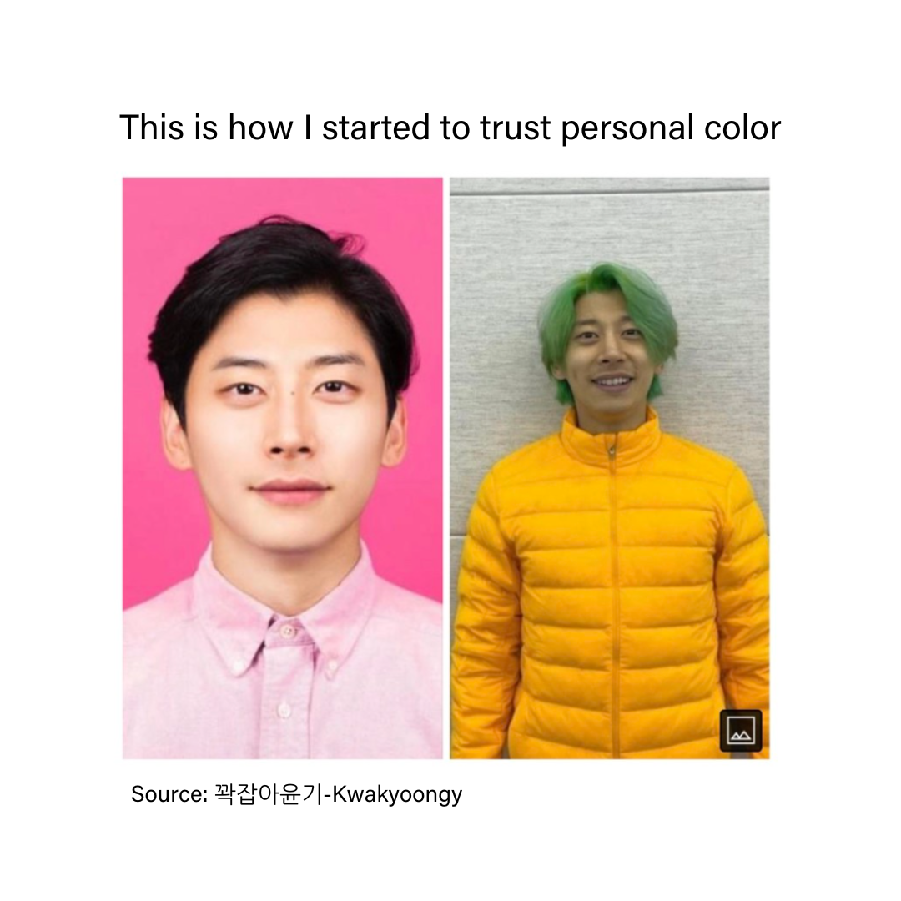
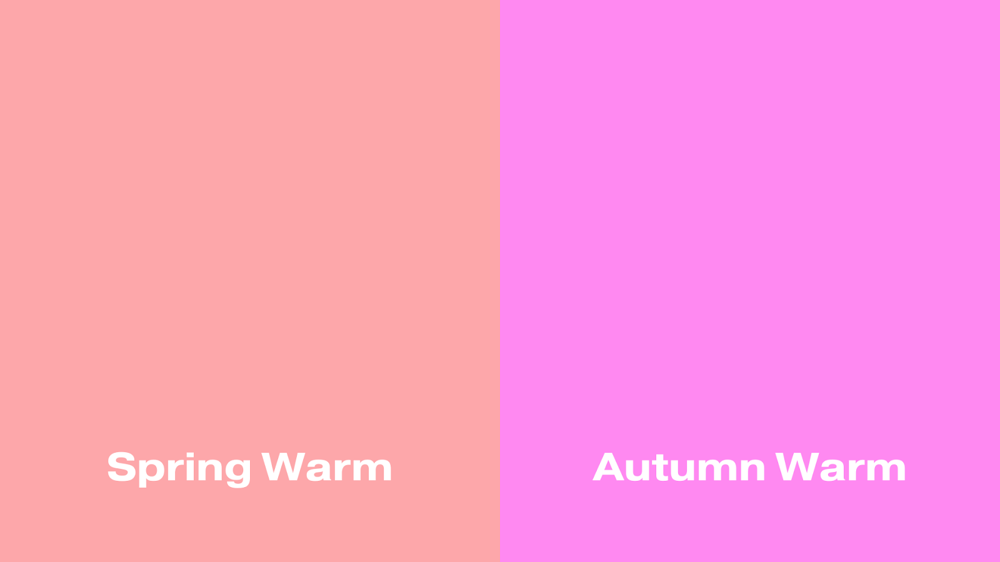
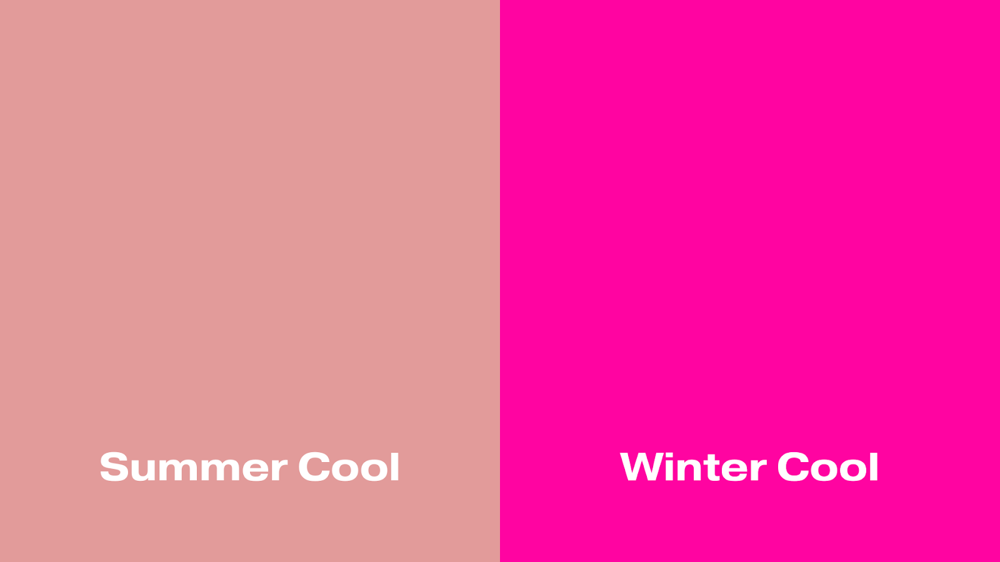

The Free Ultimate Personal Color Analysis By Myntra
What’s the Korean secret to a flawless face? It’s probably personal color! K-beauty reveals understanding
colors to use flattering products which complement your skin complexion, undertones, and defining
features, can do wonders for your daily routine. Knowing what colors suit you can not only help you save
time and money when shopping for makeup but also refine your look and give you an extra boost of
confidence!

Read more here – but in short, it’s evaluating what colors suit you best based on your skin tone.
Understanding personal color theory has been a key tool for makeup artists and fashion stylists for years in
Korea. It’s why some K-pop stars or Korean actors often have makeup and outfits that look
like it was perfectly personalized for them!
Are you a cool or warm tone? Here’s a checklist to find out!
| Warm |
Cool |
| I tan easily when under the sun |
I get red when under the sun |
| I suit gold jewellery more |
I suit silver jewellery more |
| I feel like I have more yellow undertones |
I feel like I have more red undertones |
| I feel like I look better with peachy/orangey makeup |
I feel like I look better with pinky/purple makeup |
| Under the sun my veins appear more green |
Under the sun my veins appear more blue |
| I would prefer wearing an all-brown outfit |
I would prefer wearing an all-black outfit |
| I feel like I would look better in green or beige eyeshadow |
I feel like I would look better in blue or grey eyeshadow |
If you feel like you can check off all the boxes, you might be a neutral tone! Lucky you, that means you’ll
likely have little trouble looking for colors that fit you.
Are you a Spring/Autumn Warm? Or a
Summer/Winter Cool?
Now that you have an idea of warm versus cool – what season are you? If you’re a warm tone, it’ll be
between spring or autumn. If you’re cool-toned you’ll be summer or winter.
To see which season tone you are, try putting your hand on top of these colors and see which one makes
your skin look brighter and feels more flattering. Observe if your skin looks washed out and dull against
a color.


- Spring warms might have bright and lively tones with high brightness and low saturation.
‣ Click here to see warm-tone recommendation.
- Summer cools may have softer tones with high brightness and low saturation.
‣ Click here to see cool-tone recommendation.
- Autumn warms have softer tones with low brightness and saturation.
‣ Click here to see warm-tone recommendation.
- Winter cools have stronger tones with low brightness and high saturation.
‣ Click here to see cool-tone recommendation.